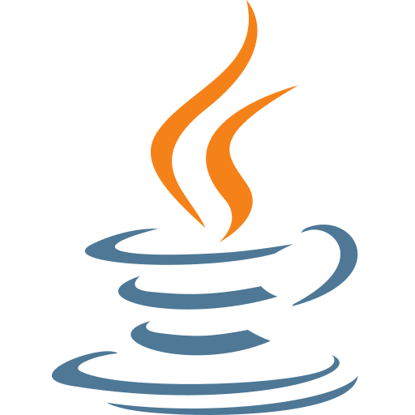
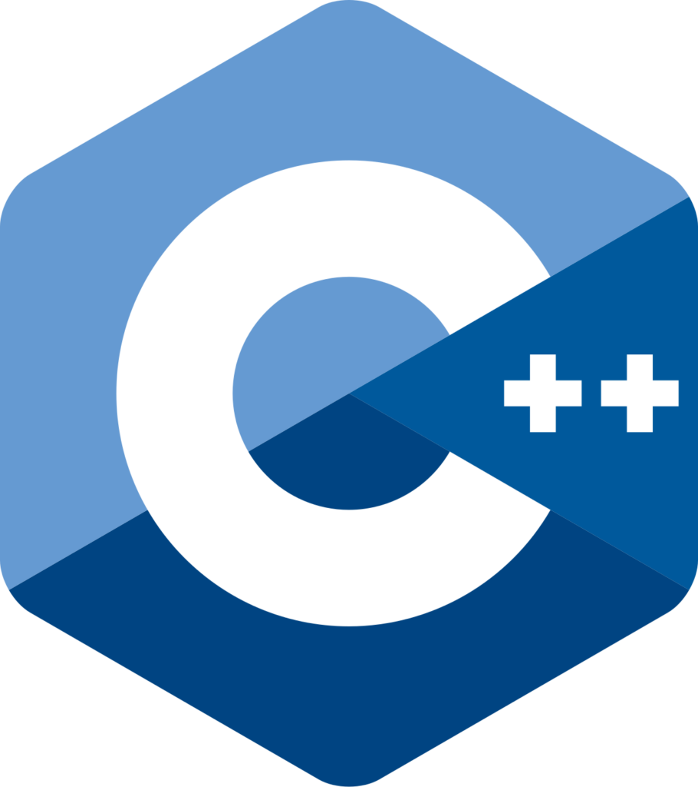

Je suis Osiris, de mon vrai nom Louis Amedro, un développeur passionné
par l'univers du jeu vidéo et la programmation.
Mon parcours et ma formation en BUT Informatique à l’IUT de Calais
m’ont permis d’acquérir une base solide en développement web et en
programmation de manière générale. J'ai créé Osiris Sio pour partager
mes projets, transmettre mes connaissances, et rassembler une
communauté autour du gaming et de la créativité.
 Python
Python
 HTML
HTML
 CSS
CSS
 JavaScript
JavaScript
 PHP
PHP
 Node.js
Node.js
 Vue.js
Vue.js
PostgreSQL

Java
C++